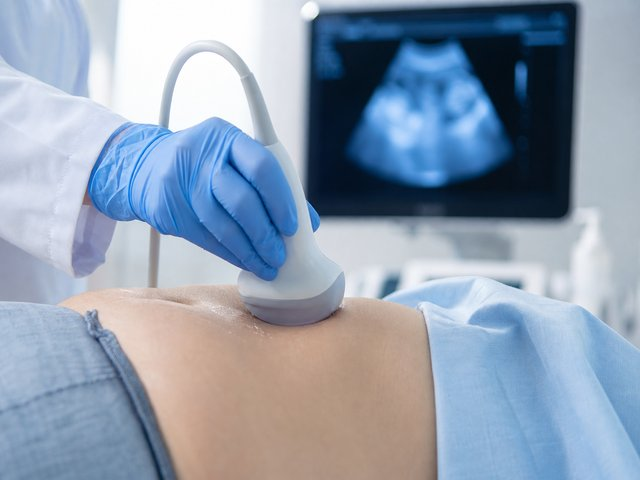
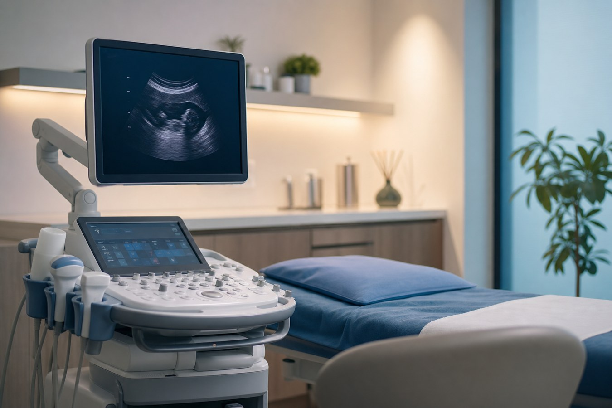
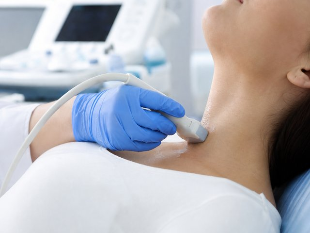
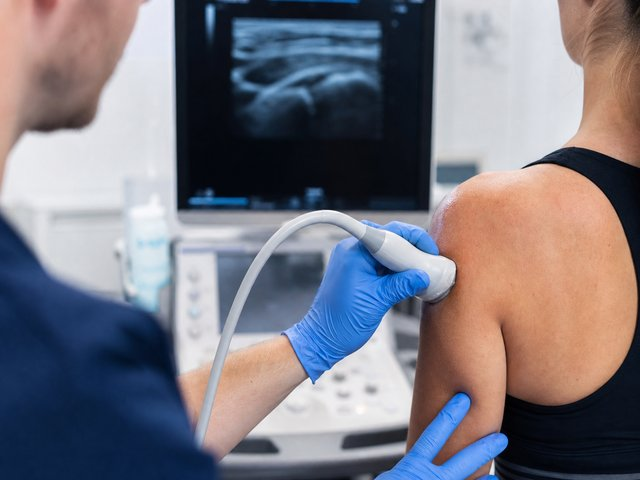
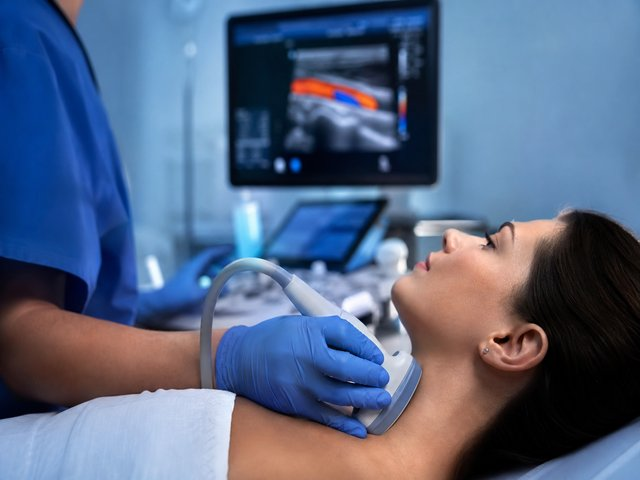

Abdomen and urinary tract
Liver, gallbladder, pancreas, kidneys, bladder and urinary tract.
Learn more →Clinical ultrasound practice · Pozzallo (RG), Italy
Up-to-date equipment and reports explained in plain words.
Ultrasound scans by appointment, in the centre of Pozzallo. Book online or by phone, whichever you prefer.

Clinical ultrasound practice in Pozzallo. I see patients by appointment and explain in plain words what the scan shows.
About meAbdomen, thyroid, musculoskeletal, vascular Doppler and more.

Liver, gallbladder, pancreas, kidneys, bladder and urinary tract.
Learn more →


I am Dr. Salvatore Susino, a radiologist. I focus mainly on clinical ultrasound and make a point of explaining every report in plain words.
In the centre of Pozzallo, at Via dell'Arno 34.
The practice is located at Arcobaleno Dentisti, on Via dell'Arno 34 in Pozzallo.
Online or call +39 0932 954441 / +39 351 374 6102 — whichever you prefer.
Go to bookingHad a good experience? Your review helps other patients find us.
Leave a review on Google →